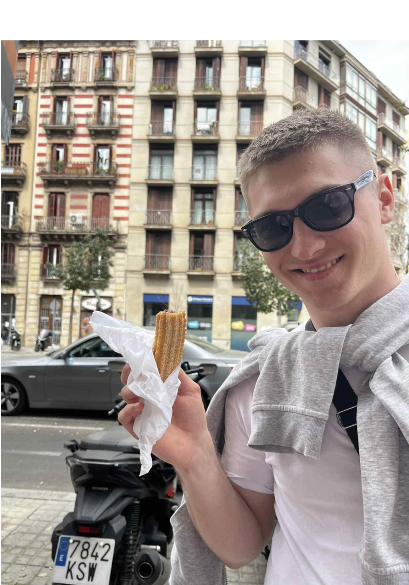

Student Informatyki III r. KUL
Cześć, jestem Adam! Studiuję informatykę i pasjonuję się programowaniem. Bardzo interesują mnie aplikacje webowe, zwłaszcza full-stack. Pasjonuje mnie tworzenie dobrze działających systemów i praktycznego oprogramowania. Jestem też członkiem Koła Naukowego Informatyków KUL.
Moje Projekty
Do moich największych projektów należą aplikacje full-stack i czysto webowe, które dostępne są na moim GitHubie.
E-commerce to projekt sklepu internetowego z frontem w ReactJS i backendem w Springu z bazą danych w MySQL.
Był to pierwszy projekt, który zajął mi więcej niż dzień przez co oswoiłem się z dłuższym czasem tworzenia aplikacji.
Algoviewer jest projektem zaliczeniowym z przedmiotu Algorytmy i Struktury Danych. Jest to aplikacja
webowa w Angular, której zadaniem jest wizualizacja algorytmów i struktur danych.
QRApp to aplikacja fullstack, która generuje kody QR dla wpisanego tekstu lub linku. Wykorzystane technologie to
Angular dla frontu i Spring Boot na backendzie oraz biblioteka ZXing do generowania kodów.
Tech Stack
Doświadczenie
Projekt Koła Naukowego Informatyków
Technologie: Spring Boot, Tesseract OCR, CSV
Uczestniczyłem w pracach zespołu tworzącego aplikację
do przetwarzania wyników ankiet papierowych i elektronicznych. Moim zadaniem było zaimplementowanie
funkcji wczytywania danych z plików .csv oraz ich scalania w jeden spójny plik wynikowy.
W projekcie wykorzystano silnik OCR Tesseract do rozpoznawania tekstu ze skanów.
Usługa programistyczna + wsparcie techniczne
Okres: 2 miesiące
W ramach zlecenia realizowałem zadania programistyczne oraz zapewniałem
bieżące wsparcie techniczne klientowi. Praca obejmowała zarówno rozwój oprogramowania, jak i pomoc w
utrzymaniu istniejących systemów.